19 Machine Learning Regression
19.1 Introduction
You have used linear regression before to ask whether two variables are related. In this workshop we use it differently. The question is no longer “is methylation associated with age?” — we already have good biological evidence that it is. The question is: given a bat’s methylation profile, how accurately can we predict its age?
This is a machine learning framing. We are not interested in p-values or confidence intervals here. We are interested in prediction accuracy on data the model has never seen. That distinction — inference versus prediction — is the conceptual foundation of everything that follows.
The dataset comes from Wilkinson et al. (2021, Nature Communications), who measured DNA methylation at CpG sites across bat species to build an epigenetic clock: a model that predicts chronological age from methylation patterns. Each row is one bat. The column age is the known age in years. All remaining columns are methylation values at individual CpG sites, expressed as proportions between 0 and 100.
19.1.1 A note on how we use AI in this workshop
This workshop is divided into two parts. The first is data exploration, where the checks we need to run are well-defined and their outputs are immediately verifiable — you will know whether a result is correct without any modelling knowledge. This is where AI assistance is appropriate, and we use it deliberately.
The second part covers the machine learning methods themselves. Here you will write and run every line of code yourself. If you do not write the modelling code, you will not develop the understanding needed to judge when an AI-generated model is correct, incomplete, or quietly wrong. The ability to critically evaluate AI output depends on having built the underlying knowledge yourself first.
19.1.2 Learning Objectives
By the end of this workshop, you will:
- Use GitHub Copilot Chat in agent mode to conduct a structured data exploration
- Write precise, verifiable AI prompts and critically evaluate the output
- Reframe linear regression as a predictive rather than inferential tool
- Construct and justify a train/test split
- Fit and evaluate a linear regression model using
tidymodels - Use
check_model()to diagnose model assumptions on training data - Diagnose prediction performance using visual diagnostics on test data
- Explain overfitting and fit a ridge regression model to address it
- Compare two models critically using both metrics and visualisations
19.2 Setup — Getting Started
Clone the GitHub Classroom repository for this workshop using the link on your course page. Once cloned, open the RStudio project. You should see the following structure already in place:
bat_workshop/
|
├── .github/
│ └── copilot-instructions.md # partially complete - review
├── data/
│ └── bat_methylation.csv # raw — never modify this file
├── scripts/
│ ├── 01_explore.R
│ └── 02_model.R
├── outputs/
└── README.mdRaw data lives in data/ and should never be modified. Scripts are numbered to indicate the order they should be run. All plots and saved outputs go to outputs/. Open scripts/01_explore.R and confirm the packages load without errors.
If any package fails to load, install it with install.packages("package_name") and try again. Run install.packages(c("tidyverse", "here", "janitor", "skimr", "GGally", "tidymodels", "glmnet", "performance", "corrr")) to install everything needed for both scripts at once.
Part 1 — Data Exploration
Before building any model it is essential to understand the data you are working with. This section asks you to produce a structured exploration of the bat methylation dataset covering completeness, distributions, and relationships between variables.
You have two options for how you complete this section. Read both before deciding.
Open scripts/01_explore.R and write the exploration code yourself using tidyverse. This is the recommended approach. The questions below will guide what you need to produce, and a full solution is available once you have made a genuine attempt.
If you choose to use AI assistance, you must do so correctly or the output will not be trustworthy. Read the guidance below before generating anything.
19.2.1 If you are using GitHub Copilot Chat
Navigate to your repository on github.com. Open Copilot Chat and choose between agent mode or ask mode. Agent mode reads your repository structure and generates code specific to your project. Ask mode does not.
Ask mode answers questions. You could have one window open on your codespace and one on Github chat window
Agent mode will implement file changes directly on your code on Github. You will need to determine what to keep and what to discard with pull requests. Changes made on Github will then need to be pulled onto your local workspace in order to move forward.
Before you type anything into Copilot, check and improve the copilot-instructions.md file
This file informs all of your requests in Agent or Ask mode on Github Copilot
Copilot Instructions
[COMPLETE:
Your instructions must be specific enough that the output is verifiable. They should cover the file path and format of the dataset, what the rows and columns represent biologically — Copilot has no biological knowledge unless you provide it — each specific check you want performed, each plot you want produced and where to save it, and the coding conventions to follow: |> not %>%, here() for file paths, snake_case for naming, and a plain English comment at the start of every block explaining what it does and why.
Running without errors means the syntax is valid. It does not mean the analysis is correct. You must verify every output against what you know about the data. Work through the questions below before accepting anything the AI produced.
19.2.2 What to produce
Whether you wrote the code yourself or used AI assistance, you should have produced the following outputs before answering the questions:
- A report of dataset dimensions — number of rows and columns
- A column-level report of missing values
- A check for duplicate rows with an explicit count
- A histogram of bat ages saved to
outputs/ - Faceted histograms of methylation values at each CpG site saved to
outputs/ - A pairs plot showing relationships between age and CpG sites saved to
outputs/ - A cleaned dataset saved to
data/bat_methylation_clean.csv
19.2.3 Step 1 — Loading and cleaning
The data file is a CSV located at data/bat_methylation.csv. Load it using here() for a robust file path and clean the column names immediately after loading.
If you are unsure how
here()works or why we useclean_names(), revisit the Data Cleaning chapter before continuing.
The here package builds file paths relative to your project root, which means your script will work on any machine regardless of where the project folder sits. The janitor package provides clean_names(), which converts column names to consistent snake_case — removing spaces, special characters, and capital letters that cause problems in R column references.
After running this, check that glimpse(bats_raw) shows column names in snake_case with no spaces or backtick escaping needed. For example, CpG 1 TET2 should become cpg_1_tet2.
19.2.4 Step 2 — Checking completeness
Before any analysis, confirm the data are complete. Check dimensions, missing values, and duplicate rows.
The Data Cleaning chapter covers missing value checks and duplicate detection in detail. The
skimrpackage introduced there is particularly useful here because it combines dimension reporting, missing value counts, and distributional summaries in a single call.
skim() from the skimr package produces a compact summary that includes the number of missing values per column, the completion rate, and basic distributional information for numeric columns. This is more informative than summary() for a first look at a new dataset.
For duplicates, duplicated() returns a logical vector — TRUE for any row that is an exact copy of a previous row. Summing that vector gives the total count of duplicate rows. Reporting zero explicitly is better than producing no output, because silence is not confirmation.
19.2.5 Step 3 — Distributions
Produce a histogram of bat ages and faceted histograms of methylation values at each CpG site.
Revisit the Data Insights chapter if you are unsure how to use
pivot_longer()to reshape multiple columns into a single faceted plot.
A histogram with 15 bins is appropriate for 62 observations. Fewer bins will obscure the shape; more will produce noise. Save directly to outputs/ using ggsave() immediately after the plot call — if you wait until the end of the script you may save the wrong plot.
With multiple CpG sites measured on different scales, a faceted plot is more informative than overlaid histograms. pivot_longer() reshapes the data from wide format — one column per site — to long format — one row per measurement — which facet_wrap() can then use to split by site.
Use scales = "free_y" to allow each panel its own y-axis scale, since sites with rare extreme values would compress the scale for all other panels if a shared axis were used.
bats_raw |>
select(-sample, -age_category) |>
pivot_longer(
-age,
names_to = "site",
values_to = "methylation"
) |>
ggplot(aes(x = methylation)) +
geom_histogram(bins = 20, fill = "steelblue", colour = "white") +
facet_wrap(~site, scales = "free_y") +
labs(
title = "Methylation distributions by CpG site",
x = "Methylation value",
y = "Count"
) +
theme_minimal()
#ggsave(here("outputs", "cpg_distributions.png"), width = 10, height = 6)19.2.6 Step 4 — Relationships between variables
Produce a pairs plot showing the relationship between age and all CpG sites simultaneously.
The Data Insights chapter introduces
GGally::ggpairs()for visualising relationships across multiple variables at once. Revisit that section if you have not used it before.
ggpairs() from the GGally package produces a matrix of plots: scatter plots in the lower triangle, correlation coefficients in the upper triangle, and density plots on the diagonal. Select only the relevant columns before passing to ggpairs() to avoid including sample and age_category.
19.2.7 Step 5 — Save the cleaned dataset
At the end of the exploration script, save a cleaned version of the data that the modelling script can load directly. This avoids repeating cleaning steps and ensures both scripts work from identical data.
19.2.8 Check your outputs
Work through these questions using your actual outputs. Do not answer from memory or expectation.
Q1. How many bats are in the dataset?
Q2. How many CpG predictor columns are there, excluding sample, age, and age category?
Q3. Looking at your age histogram, which best describes the distribution?19.2.8.1 Checkpoint: Before moving to Part 2
Confirm the following before proceeding to the modelling sections.
The dataset has 62 rows and 10 columns.
Missing values have been checked at column level using skim() or equivalent.
Duplicate rows have been checked and the count reported explicitly.
All plots have been saved to outputs/ using here().
Column names are in snake_case following clean_names().
A cleaned dataset has been written to data/bat_methylation_clean.csv.
# Load required packages
library(tidyverse)
library(here)
library(janitor)
library(skimr)
library(GGally)
# Load the bat methylation dataset
# here() builds the path relative to the project root
bats_raw <- read_csv(here("data", "bat_methylation.csv"))
# Clean column names to snake_case
# Removes spaces and special characters that cause problems in R
bats_raw <- clean_names(bats_raw)
# Check dimensions and variable types
glimpse(bats_raw)
# Summarise completeness and distributions at column level
# skim() reports missing values, completion rates, and distributional statistics
bats_raw |> skim()
# Check for duplicate rows — report zero explicitly, not silence
bats_raw |>
duplicated() |>
sum()
# Distribution of bat ages
# Uneven coverage of age groups affects model reliability
bats_raw |>
ggplot(aes(x = age)) +
geom_histogram(bins = 15, fill = "steelblue", colour = "white") +
labs(
title = "Distribution of bat ages",
x = "Age (years)",
y = "Count"
) +
theme_minimal()
#ggsave(here("outputs", "age_distribution.png"), width = 7, height = 5)
# Methylation distributions at each CpG site
bats_raw |>
select(-sample, -age_category) |>
pivot_longer(
-age,
names_to = "site",
values_to = "methylation"
) |>
ggplot(aes(x = methylation)) +
geom_histogram(bins = 20, fill = "steelblue", colour = "white") +
facet_wrap(~site, scales = "free_y") +
labs(
title = "Methylation distributions by CpG site",
x = "Methylation value",
y = "Count"
) +
theme_minimal()
#ggsave(here("outputs", "cpg_distributions.png"), width = 10, height = 6)
# Pairs plot: relationships between age and all CpG sites
bats_raw |>
select(age, starts_with("cpg"), starts_with("aspa")) |>
ggpairs()
#ggsave(here("outputs", "pairs_plot.png"), width = 10, height = 9)
# Save cleaned dataset for modelling script
write_csv(bats_raw, here("data", "bat_methylation_clean.csv"))Age distribution With only 62 bats, gaps in age coverage matter. A model evaluated on age groups that are sparse in the training data will produce unreliable predictions for those groups. Note which age categories are well represented and which are not — return to this when interpreting the predicted versus actual plot later.
CpG distributions Are methylation values on a comparable scale across sites? Sites that show little variation across bats carry little predictive information. Note any sites with unusually narrow ranges, clustering near zero, or bimodal patterns.
Pairs plot Which CpG sites correlate most strongly with age? Are any sites highly correlated with each other? Strong inter-predictor correlations motivate the use of ridge regression later in the workshop. When you reach the coefficient comparison plot, returning to this pairs plot will help you understand why ridge shrinks certain predictors more than others.
Part 2 — Machine Learning
From this point forward, you write all code yourself. The sections that follow cover concepts you are encountering for the first time in a machine learning context. Writing the code is part of learning what it does.
Open scripts/02_model.R. All remaining code in this workshop goes here.
# Load required packages
library(tidyverse)
library(tidymodels)
library(glmnet)
library(performance)
library(corrplot)
library(here)
# Load the cleaned dataset produced by 01_explore.R
# Run that script first if this file does not exist
bats <- read_csv(here("data", "bat_methylation_clean.csv")) |>
select(-sample, -age_category)The select(-sample, -age_category) step removes two columns that must not enter the model:
-
sampleis a text identifier with no biological predictive value — including it would cause an error -
age_categoryis derived directly fromage— including it would allow the model to predict age from a column that encodes age, which is circular and would produce falsely excellent results. This is called data leakage.
19.2.9 A familiar starting point
You have used linear regression before to ask whether methylation is associated with age. The code below fits the same model you would have written in your statistics course.
Call:
lm(formula = age ~ ., data = bats)
Residuals:
Min 1Q Median 3Q Max
-4.6416 -1.4799 -0.1981 0.9211 5.1378
Coefficients:
Estimate Std. Error t value Pr(>|t|)
(Intercept) 1.36941 3.56434 0.384 0.70243
cp_g_1_tet2 -0.21811 0.12888 -1.692 0.09668 .
cp_g_2_tet2 0.35115 0.12248 2.867 0.00601 **
cp_g_3_tet2 -0.07675 0.08429 -0.910 0.36684
cp_g_4_tet2 0.10272 0.07517 1.367 0.17775
cp_g_gria2_1 0.68176 0.22502 3.030 0.00384 **
cp_g_gria2_2 0.33983 0.21835 1.556 0.12581
aspa_1 -0.08150 0.03785 -2.153 0.03604 *
---
Signif. codes: 0 '***' 0.001 '**' 0.01 '*' 0.05 '.' 0.1 ' ' 1
Residual standard error: 2.246 on 51 degrees of freedom
(3 observations deleted due to missingness)
Multiple R-squared: 0.645, Adjusted R-squared: 0.5963
F-statistic: 13.24 on 7 and 51 DF, p-value: 1.393e-09summary() gives you coefficients, standard errors, p-values, and R-squared. These answer the question: is there a significant relationship between methylation and age, and how much variance does the model explain?
Look at the output before continuing.
What does the R-squared fromsummary(lm_base) tell you?
Now check whether the model meets the assumptions of linear regression before interpreting anything from it.
check_model() produces six diagnostic panels. The most important for a linear regression are:
- Linearity — does the relationship between predictors and outcome appear linear, or is there a systematic curve in the residuals?
- Homogeneity of variance — are residuals equally spread across fitted values, or do they fan out at certain ages?
- Normality of residuals — are residuals approximately normally distributed?
- Influential observations — with only 62 bats, a single unusual individual can meaningfully shift the fitted line
Note anything concerning before proceeding. These patterns will be worth comparing with the predicted versus actual plot later.
summary(lm_base) evaluates the model on the same data used to fit it. R-squared and p-values describe how well the model explains the data it has already seen. This is appropriate for inference — but it tells us nothing about how well the model would predict the age of a bat it has never encountered.
For prediction we need a different approach. We withhold some data before fitting, evaluate on that held-out portion, and report performance on data the model never saw. This is what the rest of this section introduces.
The model is identical. The question — and therefore the evaluation — changes entirely.
The Train/Test Split
If we train a model on all available data and measure how well it fits, we are measuring memorisation rather than generalisation. A model that has seen every data point during training can fit them closely without learning anything that transfers to new observations.
tibble(
x = c(0, 0.8),
xend = c(0.8, 1),
label = c("Training set (80%)\nn ≈ 50 bats", "Test set (20%)\nn ≈ 12 bats"),
fill = c("#457B9D", "#E63946")
) |>
ggplot() +
geom_rect(
aes(xmin = x, xmax = xend, ymin = 0, ymax = 1, fill = fill),
alpha = 0.85, colour = "white", linewidth = 1
) +
geom_text(
aes(x = (x + xend) / 2, y = 0.5, label = label),
colour = "white", fontface = "bold", size = 4.5, lineheight = 1.3
) +
scale_fill_identity() +
annotate("text", x = 0.4, y = -0.25,
label = "Model is fitted on this data only",
colour = "#457B9D", size = 3.5) +
annotate("text", x = 0.9, y = -0.25,
label = "Model is never seen this data until evaluation",
colour = "#E63946", size = 3.5) +
annotate("segment", x = 0.4, xend = 0.4, y = -0.15, yend = 0,
colour = "#457B9D", arrow = arrow(length = unit(0.2, "cm"))) +
annotate("segment", x = 0.9, xend = 0.9, y = -0.15, yend = 0,
colour = "#E63946", arrow = arrow(length = unit(0.2, "cm"))) +
scale_x_continuous(limits = c(0, 1)) +
scale_y_continuous(limits = c(-0.4, 1.2)) +
labs(
title = "The train/test split",
subtitle = "Data is divided before any modelling begins"
) +
theme_void(base_size = 13) +
theme(
plot.title = element_text(face = "bold", hjust = 0.5),
plot.subtitle = element_text(hjust = 0.5, colour = "grey40")
)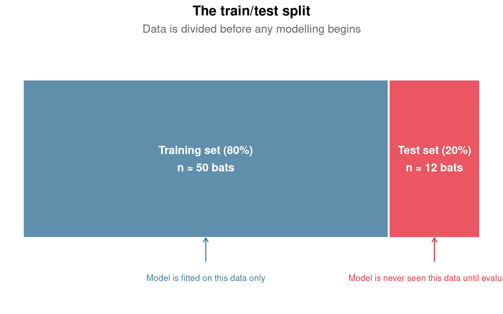
By withholding some data before training, the training set is used to fit the model. The test set is then held out entirely and used only for final evaluation. The model never sees the test set during fitting, making the evaluation an honest estimate of performance on genuinely new data.
We will run the same model three times, changing one thing at a time. This is the simplest way to understand what drives variability in RMSE — changing two things simultaneously would make it impossible to identify the cause of any difference.
- Split 1 is the baseline: 80% training, 20% test, seed 42
- Split 2 changes the proportion only: 70/30, seed 42 — everything else identical to Split 1
- Split 3 changes the seed only: 80/20, seed 123 — everything else identical to Split 1
Split 1 versus Split 2 tells you whether the proportion matters. Split 1 versus Split 3 tells you whether the random assignment of bats — with the same proportions — affects RMSE.
lm() fits a model but has no built-in machinery for train/test splits, cross-validation, or consistent evaluation metrics across model types. tidymodels provides all of these in a consistent framework. The underlying fitting engine is still lm() — you can confirm this with set_engine("lm") in the code below. RMSE (root mean squared error) is the average prediction error in the same units as the outcome — here, years.
# Split 1: baseline — 80/20, seed 42
set.seed(42)
split_1 <- initial_split(bats, prop = 0.8)
train_1 <- training(split_1)
test_1 <- testing(split_1)
rec_1 <- recipe(age ~ ., data = train_1) |>
step_normalize(all_predictors())
fit_1 <- workflow() |>
add_recipe(rec_1) |>
add_model(linear_reg() |> set_engine("lm") |> set_mode("regression")) |>
fit(data = train_1)
rmse_1 <- fit_1 |>
predict(test_1) |>
bind_cols(test_1 |> select(age)) |>
metrics(truth = age, estimate = .pred) |>
filter(.metric == "rmse") |>
pull(.estimate)
rmse_1# Split 2: 70/30, seed 42
# Only the prop argument changes relative to Split 1
set.seed(42)
split_2 <- initial_split(bats, prop = 0.7)
train_2 <- training(split_2)
test_2 <- testing(split_2)
rec_2 <- recipe(age ~ ., data = train_2) |>
step_normalize(all_predictors())
fit_2 <- workflow() |>
add_recipe(rec_2) |>
add_model(linear_reg() |> set_engine("lm") |> set_mode("regression")) |>
fit(data = train_2)
rmse_2 <- fit_2 |>
predict(test_2) |>
bind_cols(test_2 |> select(age)) |>
metrics(truth = age, estimate = .pred) |>
filter(.metric == "rmse") |>
pull(.estimate)
rmse_2# Split 3: 80/20, seed 123
# Only the seed changes relative to Split 1
# The proportion is identical — only the random assignment differs
set.seed(123)
split_3 <- initial_split(bats, prop = 0.8)
train_3 <- training(split_3)
test_3 <- testing(split_3)
rec_3 <- recipe(age ~ ., data = train_3) |>
step_normalize(all_predictors())
fit_3 <- workflow() |>
add_recipe(rec_3) |>
add_model(linear_reg() |> set_engine("lm") |> set_mode("regression")) |>
fit(data = train_3)
rmse_3 <- fit_3 |>
predict(test_3) |>
bind_cols(test_3 |> select(age)) |>
metrics(truth = age, estimate = .pred) |>
filter(.metric == "rmse") |>
pull(.estimate)
rmse_3Record your three RMSE values before answering the questions below.
Should RMSE differ between Split 1 and Split 3 despite identical proportions?- Does RMSE change between Split 1 and Split 2? In which direction and why?
- Does RMSE change between Split 1 and Split 3, where only the random assignment differs?
- If Split 1 and Split 3 give substantially different RMSE values, what does this tell you about how much to trust any single evaluation?
- What would you need to do to obtain a more reliable estimate of true predictive performance?
Compare the R-squared from summary(lm_base) — fitted on all 62 bats — with the RMSE from Split 1, fitted on approximately 50 bats and evaluated on 12. The R-squared will almost certainly be higher than the test-set performance suggests is warranted. Why? Which number would you report in a paper?
The sensitivity analysis shows how RMSE varies with split choices. For the main model we now commit to the 80/20 split with seed 42 — the baseline — and proceed with the full tidymodels workflow.
Building the Linear Regression Model
A tidymodels workflow has three components. A recipe specifies how to prepare the data. A model specification defines which algorithm to use. A workflow combines the two into a single object that can be fitted, evaluated, and compared.
19.2.10 Why normalise predictors?
For ordinary linear regression, normalisation is not strictly necessary. OLS finds the same fitted values and produces the same RMSE regardless of whether predictors are on their original scale or rescaled. If all your predictors are already on comparable scales — as CpG methylation values broadly are here — you could skip this step for the linear model without consequence.
We include it for one specific reason: ridge regression requires it. The ridge penalty shrinks coefficients towards zero, and that shrinkage is applied to all coefficients equally. A predictor measured in thousands will have a naturally smaller coefficient than one measured in units, and the penalty will shrink the larger-scale predictor more aggressively — not because it is less informative, but because of scale. Normalising first ensures the penalty is applied fairly.
By normalising now and keeping the same recipe for both models, we ensure the comparison between linear and ridge regression is fair.
Normalisation is required when the algorithm is sensitive to predictor scale — ridge regression, lasso, elastic net, k-nearest neighbours, and neural networks all fall into this category.
Normalisation is not required for ordinary linear regression, logistic regression, decision trees, or random forests — these are scale-invariant by construction.
A useful rule of thumb: if your model involves a penalty term or a distance calculation, normalise. If it does not, normalisation is a stylistic choice rather than an analytical requirement.
# Commit to the 80/20 split with seed 42 for the main model
set.seed(42)
bat_split <- initial_split(bats, prop = 0.8)
bat_train <- training(bat_split)
bat_test <- testing(bat_split)
# Recipe: define the outcome, predictors, and preprocessing
# step_naomit() removes rows with missing values before fitting
# glmnet (used by ridge) cannot handle missing values and will error without this
# step_normalize() rescales all predictors to mean 0, standard deviation 1
bat_recipe <- recipe(age ~ ., data = bat_train) |>
step_naomit(all_predictors(), all_outcomes()) |>
step_normalize(all_predictors())
# Model specification: ordinary linear regression using the lm engine
lm_spec <- linear_reg() |>
set_engine("lm") |>
set_mode("regression")
# Workflow: bind recipe and model into a single object
lm_workflow <- workflow() |>
add_recipe(bat_recipe) |>
add_model(lm_spec)
# Fit on training data only — the test set is not touched here
lm_fit <- lm_workflow |>
fit(data = bat_train)Now run check_model() on the fitted workflow to examine assumptions on the training data.
You have now run check_model() twice — once on lm_base fitted on all 62 bats, and once on the tidymodels fit trained on approximately 50 bats.
Both run on training data only. They tell you whether the model’s assumptions are met on the data it has seen. This is a necessary check but not sufficient for a predictive model.
The predicted versus actual plot in the next section asks a different question: how well does the model perform on the bats it has never seen? A model can pass all assumption checks on the training data and still fail to generalise. Both checks are informative and neither replaces the other.
Now generate predictions on the held-out test set and calculate evaluation metrics.
| .metric | .estimator | .estimate |
|---|---|---|
| rmse | standard | 1.9092471 |
| rsq | standard | 0.7103651 |
| mae | standard | 1.5756454 |
The output contains three metrics.
- RMSE is in years. Is your value acceptable given the biological application? If you were determining whether a wild bat is reproductively mature, how large an error would matter?
-
RSQ is R-squared on the test set: the proportion of variance in age explained by the model on held-out data. How does this compare with the R-squared from
summary(lm_base)on the full dataset? - MAE is mean absolute error. If RMSE is considerably larger than MAE, what does this tell you about how errors are distributed across the age range?
Visualising Model Fit
RMSE is a useful single-number summary but it conceals how errors are distributed across the age range. A model can produce a reasonable RMSE while systematically failing in ways that matter biologically. The predicted versus actual plot and the residual plot are the most important diagnostics available alongside check_model().
The dashed red line represents perfect prediction. The blue smooth curve shows where predictions actually sit relative to that ideal. Any systematic deviation from the diagonal is a finding, not a cosmetic issue.
Two patterns are worth looking for specifically in this dataset. First, does the blue curve deviate from the diagonal at extreme ages — particularly for older bats, which are underrepresented in the training data? Second, does the residual plot fan outward at higher predicted ages, suggesting the model is less reliable for older bats than younger ones? Both patterns would have been visible in the pairs plot from Part 1 if you looked carefully at the scatter around the regression lines at the high end of the age range.
# Predicted versus actual age
# The dashed red line is perfect prediction
# The blue smooth curve shows where predictions actually sit
lm_preds |>
ggplot(aes(x = age, y = .pred)) +
geom_point(alpha = 0.5) +
geom_abline(linetype = "dashed", colour = "red") +
geom_smooth(method = "loess", colour = "blue", se = TRUE) +
labs(
x = "Actual age (years)",
y = "Predicted age (years)",
title = "Linear regression — predicted vs. actual age"
) +
theme_minimal()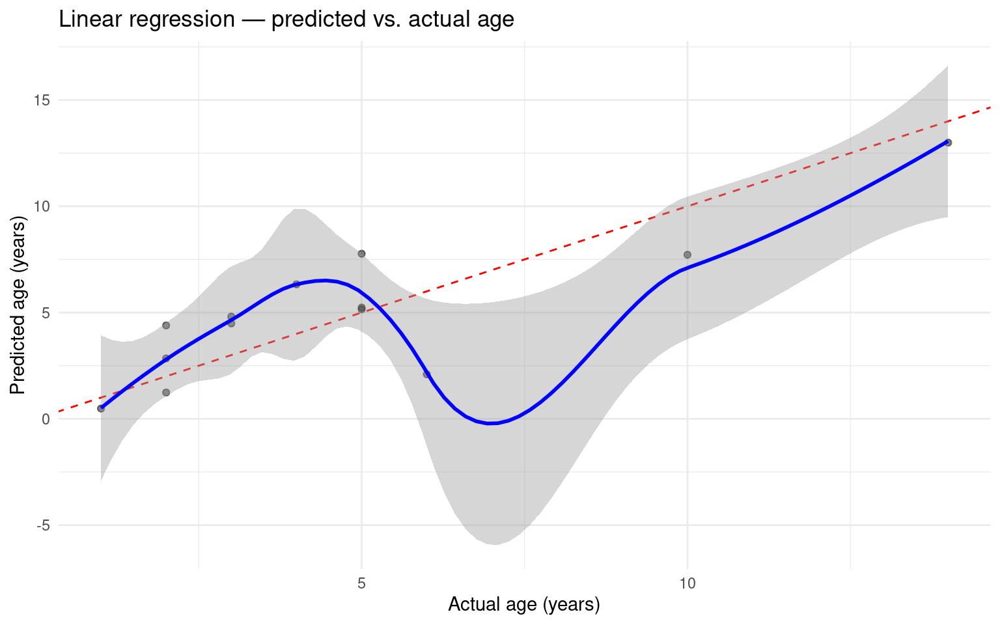
# Residual plot: actual minus predicted age, against predicted age
# A well-behaved model has residuals scattered randomly around zero
lm_preds |>
mutate(residual = age - .pred) |>
ggplot(aes(x = .pred, y = residual)) +
geom_point(alpha = 0.5) +
geom_hline(yintercept = 0, linetype = "dashed", colour = "red") +
geom_smooth(method = "loess", colour = "blue", se = TRUE) +
labs(
x = "Predicted age (years)",
y = "Residual (actual minus predicted)",
title = "Residual plot — linear regression"
) +
theme_minimal()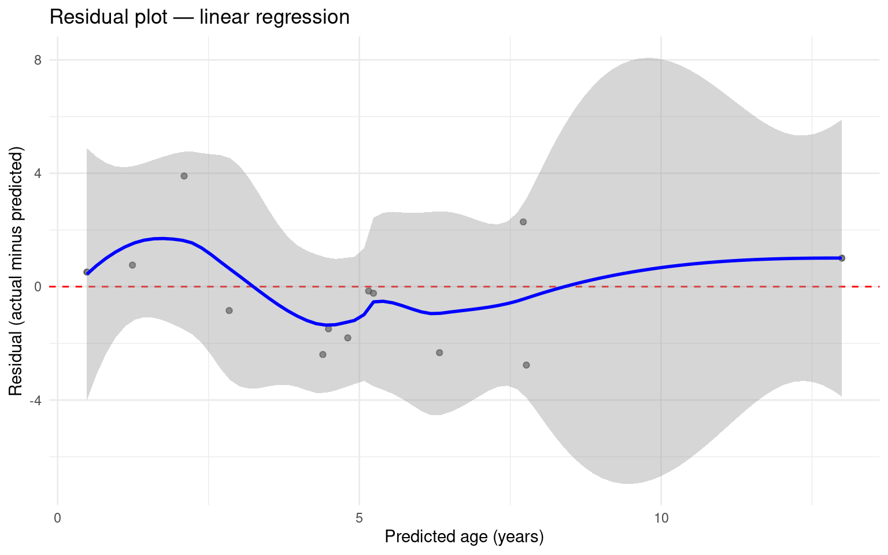
You ran check_model() on the training data earlier. Compare those diagnostics with what you see in the predicted versus actual and residual plots now.
- Do the same patterns appear in both sets of diagnostics, or does the test set reveal problems that the training data did not?
-
check_model()evaluates assumption violations on data the model has seen. The predicted versus actual plot evaluates generalisation on data the model has not seen. Which is more relevant for the biological application — deploying this model to age wild-caught bats? - A model can pass all assumption checks on training data and still fail to generalise. What would that look like in these two sets of plots simultaneously?
Why Ridge Regression?
Linear regression with many predictors faces a specific problem. When predictors are numerous relative to observations — as is typical in genomic data — the model can assign large coefficients to CpG sites that correlate with age in the training data by chance rather than because of a genuine biological relationship. On new data, those coefficients produce poor predictions. This is overfitting: the model has learned the training data too specifically to generalise.
19.2.11 Returning to the correlation structure
Before introducing ridge regression, return to the correlation structure you observed in Part 1. We now examine it on the training data only — the test set must remain untouched, even for exploratory purposes.
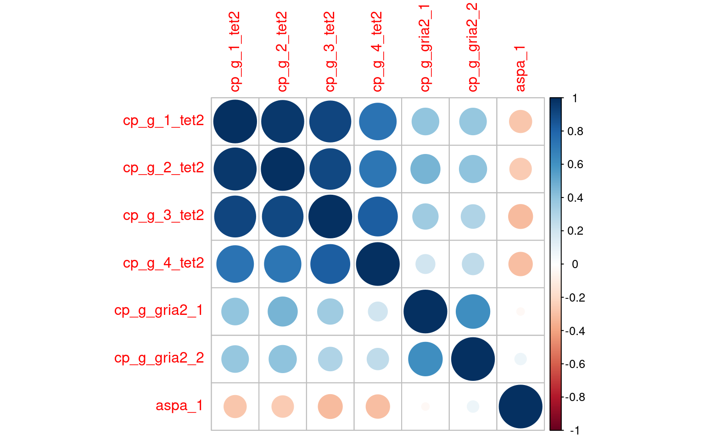
Two problems emerge from correlated predictors in linear regression.
Multicollinearity: if two CpG sites carry similar information about age, linear regression cannot reliably apportion credit between them. Small changes in the data produce large swings in their individual coefficients even though their combined contribution is stable. This makes individual coefficient estimates untrustworthy even when the overall predictions are reasonable.
Spurious correlations: a model with many correlated predictors has more opportunity to find correlations in the training data that do not hold in new data. Some of what looks like signal is noise that happens to correlate with age in this particular sample of 62 bats.
Ridge regression addresses both problems by shrinking coefficients towards zero. Correlated predictors are constrained together rather than one being arbitrarily inflated at the expense of the other.
19.2.12 Fitting ridge regression
Ridge regression adds a penalty to the fitting process that discourages large coefficients. All predictors are retained, but their influence is constrained. The strength of this constraint is controlled by lambda (λ):
- Lambda = 0: no penalty — identical to ordinary linear regression
- Lambda very large: all coefficients shrunk close to zero — the model predicts close to the mean age for every bat
- The right value sits between these extremes and must be chosen empirically
We choose lambda using cross-validation. The training data is divided into five equal portions called folds. The model is trained on four folds and evaluated on the fifth, repeated five times so every fold serves as the evaluation set once. Performance is averaged across all five repetitions, giving a stable estimate at each lambda value without using the test set.
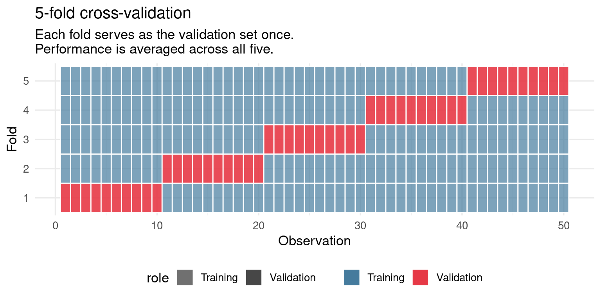
If we used the test set to choose lambda, we would be making a modelling decision based on the test set. That decision would be optimised for this particular held-out sample rather than for genuinely new data. The test set would no longer be a fair evaluation of performance on unseen observations — it would have influenced the model indirectly. This is a form of data leakage.
# Ridge specification
# mixture = 0 specifies ridge; mixture = 1 would give lasso
# penalty = tune() tells tidymodels to search across candidate lambda values
ridge_spec <- linear_reg(penalty = tune(), mixture = 0) |>
set_engine("glmnet") |>
set_mode("regression")
# Use the same recipe as before so both models are directly comparable
ridge_workflow <- workflow() |>
add_recipe(bat_recipe) |>
add_model(ridge_spec)
# Create 5-fold cross-validation folds from the training data only
set.seed(42)
bat_folds <- vfold_cv(bat_train, v = 5)
# Define 50 candidate lambda values to evaluate
lambda_grid <- grid_regular(penalty(), levels = 50)
# Fit at every lambda value across all five folds
ridge_tuned <- ridge_workflow |>
tune_grid(
resamples = bat_folds,
grid = lambda_grid,
metrics = metric_set(yardstick::rmse)
)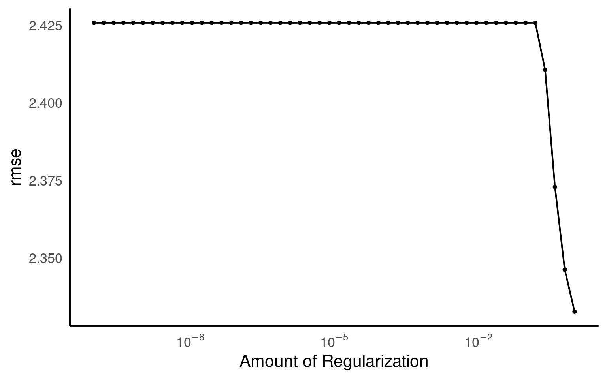
The x-axis shows lambda on a log scale — values increase from left to right. The y-axis shows average RMSE across the five folds at each lambda value.
At the far left, lambda is close to zero and the model behaves like ordinary linear regression. If RMSE is high here, overfitting is present — the model fits the training folds well but generalises poorly to the validation fold.
Moving right, increasing lambda forces coefficients towards zero. If there is a clear minimum in the curve, that is the sweet spot where the bias introduced by the penalty is outweighed by the reduction in variance.
At the far right, lambda is so large that all coefficients shrunk close to zero and the model predicts close to the mean age for every bat — RMSE rises again because the model has lost all predictive information.
Before running the selection code, interpret the plot.
- At very low lambda values on the left, is RMSE high or low? What does this tell you about whether overfitting is present?
- As lambda increases moving right, what happens to RMSE? Is there a clear minimum?
- What happens at very high lambda values on the far right, and why?
- Write down where you would place lambda based on visual inspection alone. Do this before running the next block.
Now select the best lambda:
Fitting Ridge and Examining Coefficients
Finalise the ridge model using the best lambda and evaluate it on the test set.
# Finalise the workflow with the chosen lambda and fit on full training data
ridge_final <- ridge_workflow |>
finalize_workflow(best_lambda) |>
fit(data = bat_train)
# Generate predictions on the held-out test set
ridge_preds <- ridge_final |>
predict(bat_test) |>
bind_cols(bat_test |> select(age))
# Calculate evaluation metrics
ridge_metrics <- ridge_preds |>
metrics(truth = age, estimate = .pred)
ridge_metrics| .metric | .estimator | .estimate |
|---|---|---|
| rmse | standard | 2.1543723 |
| rsq | standard | 0.6417414 |
| mae | standard | 1.8243190 |
# Predicted versus actual age — ridge regression
# Identical plot structure to the linear regression section for direct comparison
ridge_preds |>
ggplot(aes(x = age, y = .pred)) +
geom_point(alpha = 0.5) +
geom_abline(linetype = "dashed", colour = "red") +
geom_smooth(method = "loess", colour = "blue", se = TRUE) +
labs(
x = "Actual age (years)",
y = "Predicted age (years)",
title = "Ridge regression — predicted vs. actual age"
) +
theme_minimal()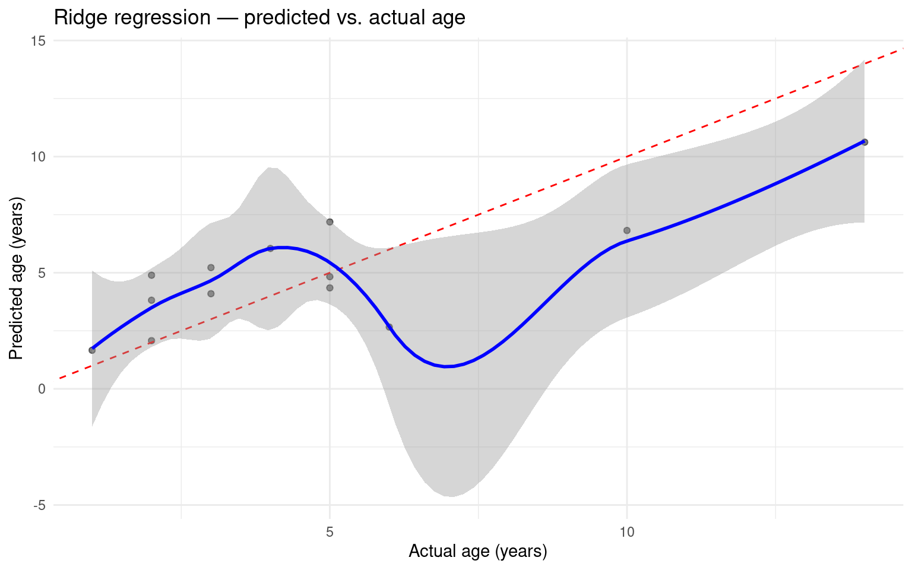
# Residual plot — ridge regression
ridge_preds |>
mutate(residual = age - .pred) |>
ggplot(aes(x = .pred, y = residual)) +
geom_point(alpha = 0.5) +
geom_hline(yintercept = 0, linetype = "dashed", colour = "red") +
geom_smooth(method = "loess", colour = "blue", se = TRUE) +
labs(
x = "Predicted age (years)",
y = "Residual (actual minus predicted)",
title = "Residual plot — ridge regression"
) +
theme_minimal()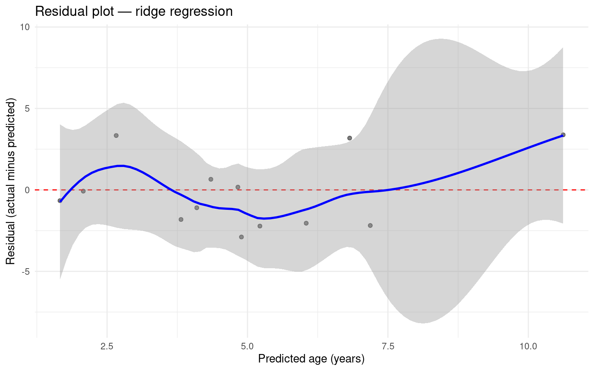
19.2.13 Which predictors were shrunk?
One of the most instructive outputs of ridge regression is the coefficient plot. Because we know which predictors are genuine CpG sites and which are synthetic noise, we can check directly whether the penalty is doing what it should.
df <- tibble(
predictor = c("CpG site A\n(strong signal)",
"CpG site B\n(weak signal)",
"Hypothetical\nnon-predictor"),
lm_est = c(4.2, 1.8, 3.1),
ridge_est = c(3.8, 0.9, 0.4),
type = c("CpG site", "CpG site", "Synthetic noise"),
x_pos = 1:3
) |>
mutate(
predictor = factor(predictor,
levels = c("CpG site A\n(strong signal)",
"CpG site B\n(weak signal)",
"Hypothetical\nnon-predictor"))
)
ggplot(df) +
# Solid filled bar: the ridge regression coefficient that remains
geom_col(
aes(x = predictor, y = ridge_est, fill = type),
alpha = 0.85, width = 0.55
) +
# Dashed outline bar: the amount shrunk away by the penalty
# Sits on top of the solid bar, reaching up to the linear regression value
geom_rect(
aes(
xmin = x_pos - 0.275,
xmax = x_pos + 0.275,
ymin = ridge_est,
ymax = lm_est,
colour = type
),
fill = NA,
linetype = "dashed",
linewidth = 0.7
) +
# Label the two regions on the first bar only
annotate("text", x = 0.72, y = 1.9,
label = "Ridge\ncoefficient",
colour = "white", size = 2.8,
fontface = "bold", lineheight = 1.1) +
annotate("segment",
x = 0.88, xend = 0.88,
y = 3.82, yend = 4.18,
colour = "#457B9D",
arrow = arrow(ends = "both",
length = unit(0.15, "cm"),
type = "open")) +
scale_fill_manual(
values = c("CpG site" = "#457B9D",
"Synthetic noise" = "#E63946")
) +
scale_colour_manual(
values = c("CpG site" = "#457B9D",
"Synthetic noise" = "#E63946"),
guide = "none"
) +
scale_y_continuous(
limits = c(0, 5),
breaks = 0:5
) +
labs(
x = NULL,
y = "Coefficient magnitude",
fill = NULL,
title = "Ridge shrinks all coefficients — hypothetical non-predictors most heavily",
subtitle = "Solid bar = ridge coefficient retained Dashed bar = amount shrunk by penalty\nSchematic illustration — not real data"
) +
theme_minimal(base_size = 12) +
theme(
legend.position = "bottom",
strip.text = element_text(face = "bold"),
axis.text.x = element_text(size = 10, lineheight = 1.2),
plot.subtitle = element_text(colour = "grey40", size = 10),
plot.title = element_text(face = "bold", size = 12)
)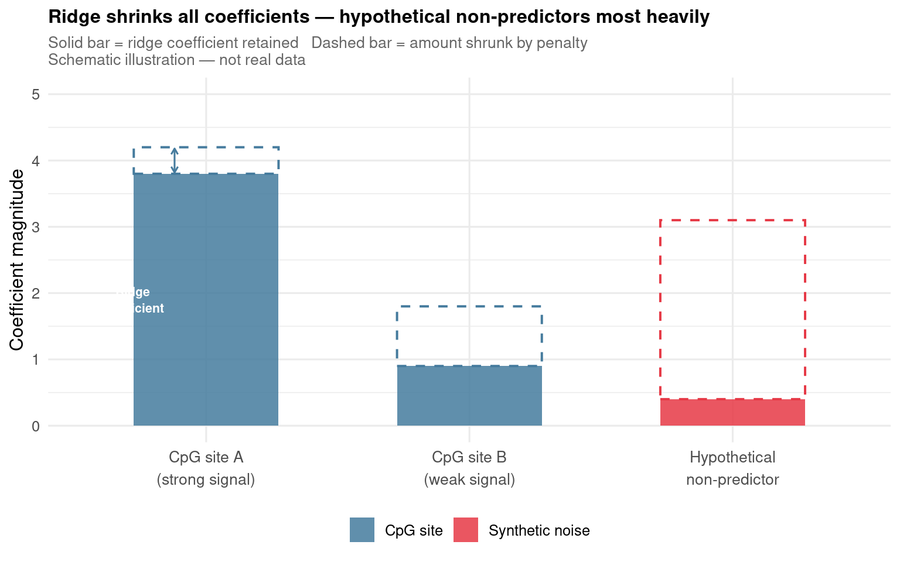
extract_fit_parsnip() retrieves the model object from the workflow. tidy() converts it to a tibble with one row per coefficient.
# Visualise ridge coefficients
# Coefficients close to zero have been shrunk heavily by the penalty
ridge_coefficients |>
filter(term != "(Intercept)") |>
ggplot(aes(x = estimate, y = reorder(term, estimate))) +
geom_col(fill = "steelblue") +
geom_vline(xintercept = 0, linetype = "dashed", colour = "red") +
labs(
x = "Coefficient estimate",
y = "Predictor",
title = "Ridge regression coefficients",
subtitle = "Sites close to zero have been shrunk by the penalty"
) +
theme_minimal()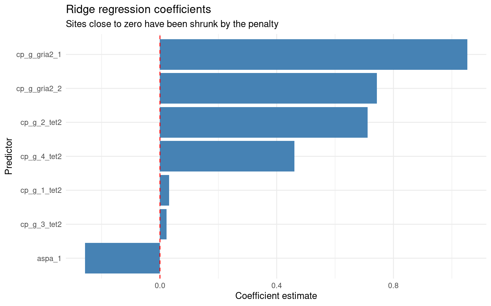
- Ridge does not set any coefficient to exactly zero — all predictors are retained. What does it mean biologically when a genuine CpG site is shrunk close to zero? Does heavy shrinkage mean the site is biologically uninformative?
- Linear regression assigns non-zero coefficients to the synthetic predictors despite their having no true relationship with age. What does this demonstrate about how linear regression behaves when some predictors carry only noise?
Comparing Models
| model | .estimate |
|---|---|
| Linear regression | 1.909247 |
| Ridge regression | 2.154372 |
# Predicted versus actual for both models side by side
bind_rows(
lm_preds |> mutate(model = "Linear regression"),
ridge_preds |> mutate(model = "Ridge regression")
) |>
ggplot(aes(x = age, y = .pred)) +
geom_point(alpha = 0.5) +
geom_abline(linetype = "dashed", colour = "red") +
geom_smooth(method = "loess", colour = "blue", se = TRUE) +
facet_wrap(~model) +
labs(
x = "Actual age (years)",
y = "Predicted age (years)"
) +
theme_minimal()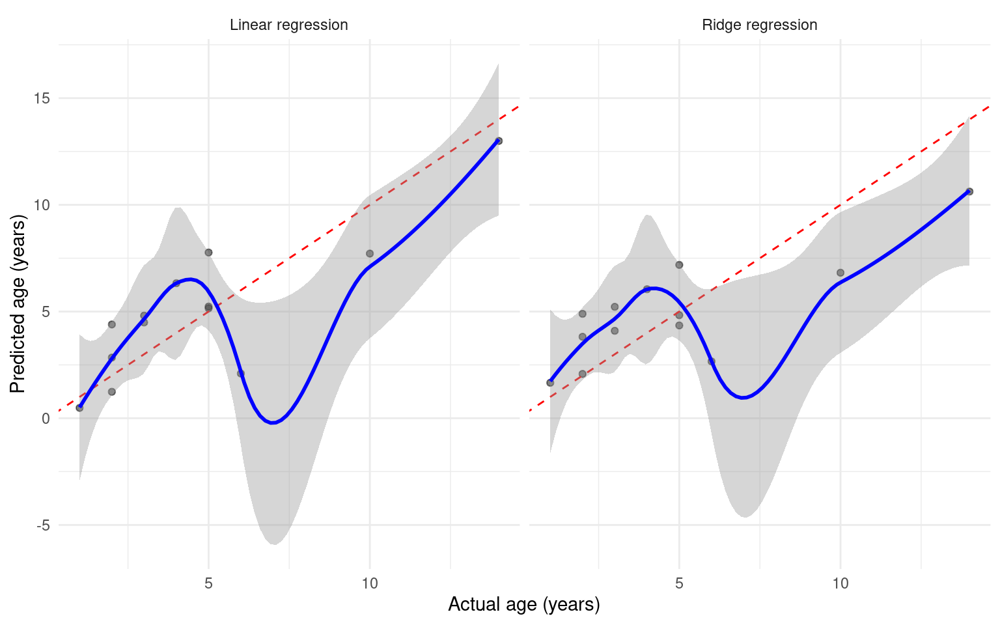
# Residual plots for both models side by side
bind_rows(
lm_preds |> mutate(model = "Linear regression",
residual = age - .pred),
ridge_preds |> mutate(model = "Ridge regression",
residual = age - .pred)
) |>
ggplot(aes(x = .pred, y = residual)) +
geom_point(alpha = 0.5) +
geom_hline(yintercept = 0, linetype = "dashed", colour = "red") +
geom_smooth(method = "loess", colour = "blue", se = TRUE) +
facet_wrap(~model) +
labs(
x = "Predicted age (years)",
y = "Residual"
) +
theme_minimal()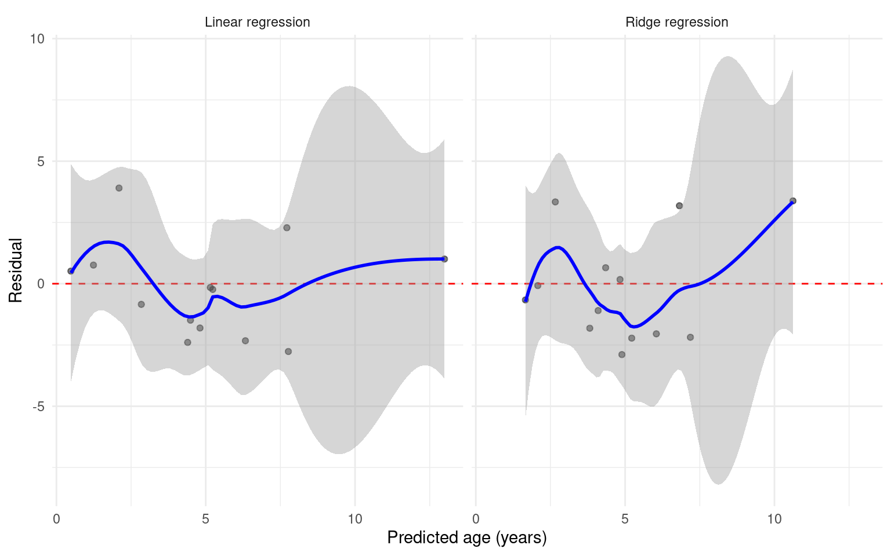
Write your answers individually before any discussion.
- Which model has lower test RMSE? Is the difference large enough to matter biologically?
- Do the predicted versus actual plots tell a different story from RMSE alone? Is one model more systematically biased at extreme ages?
- Are the residual plots more or less structured for one model compared to the other?
- Ridge regression shrinks coefficients even when it does not substantially improve RMSE. Looking at the coefficient comparison plot, is there any reason to prefer the ridge model even when the predictive performance difference is small?
- Which model would you use to estimate age of wild-caught bats from methylation data? Write two to three sentences justifying your choice and acknowledging at least one limitation of the model you select.
- What additional biological information — species, sex, tissue type — might explain remaining prediction error, and how would you investigate this?
Summary
19.2.14 Key Concepts
Inference versus prediction — linear regression reframed around predictive accuracy on unseen data rather than significance testing on observed data. The model is identical; the question and evaluation are not.
Train/test splits — withholding data before training is essential for honest evaluation. A single split may be unreliable, particularly with small datasets. Varying the seed reveals how much RMSE depends on which individuals land in the test set.
Assumption checking — check_model() on the training data and the predicted versus actual plot on the test set answer different but complementary questions. Both are necessary.
Model evaluation metrics — RMSE, RSQ, and MAE each tell you something different. Visual diagnostics — predicted versus actual, residual plots — reveal structure that summary metrics conceal.
Overfitting — when predictors are many relative to observations and correlated with each other, linear regression assigns large coefficients to noise. Ridge regression constrains this by penalising large coefficients.
Ridge regression — the penalty is controlled by lambda, chosen by cross-validation on the training data. Shrinkage is visible in the coefficient comparison plot. Ridge does not always outperform linear regression — it earns its advantage only when overfitting is substantial.
Critical model comparison — lower RMSE alone is insufficient justification for choosing a model. The pattern of errors, the stability of coefficients, and the biological interpretability of the model all contribute to a justified decision.
19.2.15 Skills Checklist
By the end of this workshop you should be able to:
library(ggplot2)
boxes <- tibble(
x = c(0.25, 0.25, 0.25, 0.25, 0.75, 0.75, 0.75, 0.75, 0.75),
y = c(0.90, 0.68, 0.46, 0.24, 0.90, 0.72, 0.54, 0.36, 0.18),
label = c(
"All data",
"Fit model\non all data",
"summary()",
"p-values, coefficients,\nR-squared on training data",
"All data",
"Split: training\nand test sets",
"Fit model on\ntraining set only",
"Predict on\nheld-out test set",
"RMSE on\nunseen data"
),
col = c(rep("#457B9D", 4), rep("#E63946", 5)),
frame = c(rep("Inference", 4), rep("Prediction", 5))
)
arrows_inf <- tibble(
x = 0.25, xend = 0.25,
y = c(0.86, 0.64, 0.42),
yend = c(0.72, 0.50, 0.30)
)
arrows_pred <- tibble(
x = 0.75, xend = 0.75,
y = c(0.86, 0.68, 0.50, 0.32),
yend = c(0.76, 0.58, 0.40, 0.22)
)
ggplot() +
annotate("text", x = 0.25, y = 1.0,
label = "INFERENCE", fontface = "bold",
colour = "#457B9D", size = 4.5) +
annotate("text", x = 0.75, y = 1.0,
label = "PREDICTION", fontface = "bold",
colour = "#E63946", size = 4.5) +
geom_label(
data = boxes,
aes(x = x, y = y, label = label, fill = col),
colour = "white", fontface = "bold",
size = 3, lineheight = 1.1,
label.size = 0, label.padding = unit(0.4, "lines")
) +
geom_segment(
data = arrows_inf,
aes(x = x, xend = xend, y = y, yend = yend),
arrow = arrow(length = unit(0.2, "cm"), type = "closed"),
colour = "#457B9D", linewidth = 0.8
) +
geom_segment(
data = arrows_pred,
aes(x = x, xend = xend, y = y, yend = yend),
arrow = arrow(length = unit(0.2, "cm"), type = "closed"),
colour = "#E63946", linewidth = 0.8
) +
scale_fill_identity() +
scale_x_continuous(limits = c(0, 1)) +
scale_y_continuous(limits = c(0.1, 1.05)) +
labs(
title = "Two frameworks, same model",
subtitle = "The mathematics does not change — the question and evaluation do"
) +
theme_void(base_size = 13) +
theme(
plot.title = element_text(face = "bold", hjust = 0.5, size = 14),
plot.subtitle = element_text(hjust = 0.5, colour = "grey40", size = 11)
)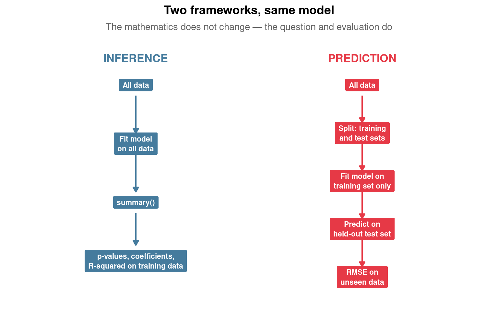
Additional Resources
Tidymodels:
- Tidymodels documentation: https://www.tidymodels.org/
- Kuhn & Silge (2022) Tidy Modelling with R: https://www.tmwr.org/
Statistical learning:
- James et al. (2021) An Introduction to Statistical Learning: https://www.statlearning.com/
The dataset:
- Wilkinson et al. (2021) Nature Communications: https://doi.org/10.1038/s41467-021-21900-2
Machine learning in biology:
- Greener et al. (2022) Nature Reviews Molecular Cell Biology: https://doi.org/10.1038/s41580-021-00407-0
AI assistance was appropriate in Part 1 because every output was immediately verifiable against what you knew about the data. The modelling code from Part 2 onwards you wrote yourself because building that knowledge is what makes it possible to evaluate whether any model — AI-generated or otherwise — is correct, complete, and appropriate for the biological question being asked.